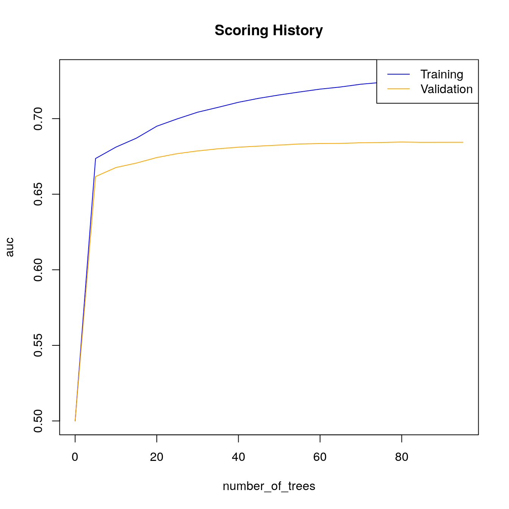
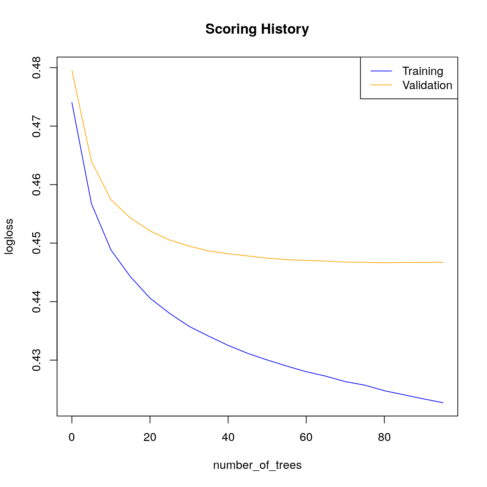

27 Classification on bad loans
- Datasets:
loan.csv - Algorithms: 1. Generalized Linear Model (GLM) 2. Random Forest (RF) 3. Gradient Boosting Machine (GBM) 4. Deep Learning (DL) 5. Naive Bayes (NB)
27.1 Comparison of GLM, RF, GBM, DL, NB
Source: https://github.com/h2oai/h2o-tutorials/blob/master/h2o-open-tour-2016/chicago/intro-to-h2o.R
27.2 Introduction
Introductory H2O Machine Learning Tutorial Prepared for H2O Open Chicago 2016: http://open.h2o.ai/chicago.html
27.2.1 Install and download h2o
First step is to download & install the h2o R library The latest version is available by clicking on the R tab here: http://h2o-release.s3.amazonaws.com/h2o/latest_stable.html
Load the H2O library and start up the H2O cluster locally on your machine:
# Load the H2O library and start up the H2O cluster locally on your machine
library(h2o)
h2o.init(nthreads = -1, #Number of threads -1 means use all cores on your machine
max_mem_size = "8G") #max mem size is the maximum memory to allocate to H2O
#> Connection successful!
#>
#> R is connected to the H2O cluster:
#> H2O cluster uptime: 17 minutes 39 seconds
#> H2O cluster timezone: Etc/UTC
#> H2O data parsing timezone: UTC
#> H2O cluster version: 3.30.0.1
#> H2O cluster version age: 7 months and 16 days !!!
#> H2O cluster name: H2O_started_from_R_root_mwl453
#> H2O cluster total nodes: 1
#> H2O cluster total memory: 7.81 GB
#> H2O cluster total cores: 8
#> H2O cluster allowed cores: 8
#> H2O cluster healthy: TRUE
#> H2O Connection ip: localhost
#> H2O Connection port: 54321
#> H2O Connection proxy: NA
#> H2O Internal Security: FALSE
#> H2O API Extensions: Amazon S3, XGBoost, Algos, AutoML, Core V3, TargetEncoder, Core V4
#> R Version: R version 3.6.3 (2020-02-29)27.2.2 Load the dataset
Next we will import a cleaned up version of the Lending Club “Bad Loans” dataset The purpose here is to predict whether a loan will be bad (not repaid to the lender). The response column, bad_loan, is \(1\) if the loan was bad, and \(0\) otherwise
Import the data
loan_csv <- "/Volumes/H2OTOUR/loan.csv"
Alternatively, you can import the data directly from a URL
# modify this for your machine
loan_csv <- "https://raw.githubusercontent.com/h2oai/app-consumer-loan/master/data/loan.csv"
data <- h2o.importFile(loan_csv) # 163,987 rows x 15 columns
#>
|
| | 0%
|
|=========== | 16%
|
|============================================== | 66%
|
|=============================================================== | 91%
|
|======================================================================| 100%
dim(data)
#> [1] 163987 15
# [1] 163987 1527.2.3 Feature Engineering
Since we want to train a binary classification model, we must ensure that the response is coded as a factor If the response is \(0/1\), H2O will assume it’s numeric, which means that H2O will train a regression model instead
data$bad_loan <- as.factor(data$bad_loan) #encode the binary response as a factor
h2o.levels(data$bad_loan) #optional: after encoding, this shows the two factor levels, '0' and '1'
#> [1] "0" "1"
# [1] "0" "1"27.2.4 Partition the data
Partition the data into training, validation and test sets:
# Partition the data into training, validation and test sets
splits <- h2o.splitFrame(data = data,
ratios = c(0.7, 0.15), #partition data into 70%, 15%, 15% chunks
seed = 1) #setting a seed will guarantee reproducibility
train <- splits[[1]]
valid <- splits[[2]]
test <- splits[[3]]Take a look at the size of each partition. Notice that h2o.splitFrame uses approximate splitting, not exact splitting, (for efficiency), so, these are not exactly 70%, 15% and 15% of the total rows.
27.2.5 Identify response and predictor variables
# Identify response and predictor variables
y <- "bad_loan"
x <- setdiff(names(data), c(y, "int_rate")) # remove the interest rate column because it's correlated with the outcome
print(x)
#> [1] "loan_amnt" "term" "emp_length"
#> [4] "home_ownership" "annual_inc" "purpose"
#> [7] "addr_state" "dti" "delinq_2yrs"
#> [10] "revol_util" "total_acc" "longest_credit_length"
#> [13] "verification_status"
# [1] "loan_amnt" "term"
# [3] "emp_length" "home_ownership"
# [5] "annual_inc" "verification_status"
# [7] "purpose" "addr_state"
# [9] "dti" "delinq_2yrs"
# [11] "revol_util" "total_acc"
# [13] "longest_credit_length"27.3 Algorithms
Now that we have prepared the data, we can train some models. We will start by training a single model from each of the H2O supervised algos:
- Generalized Linear Model (GLM)
- Random Forest (RF)
- Gradient Boosting Machine (GBM)
- Deep Learning (DL)
- Naive Bayes (NB)
27.4 GLM
Let’s start with a basic binomial Generalized Linear Model. By default, h2o.glm uses a regularized, elastic net model.
glm_fit1 <- h2o.glm(x = x,
y = y,
training_frame = train,
model_id = "glm_fit1",
family = "binomial") #similar to R's glm, h2o.glm has the family argument
#>
|
| | 0%
|
|======================================================================| 100%Next, we will do some automatic tuning by passing in a validation frame and setting lambda_search = True. Since we are training a GLM with regularization, we should try to find the right amount of regularization (to avoid overfitting). The model parameter, lambda, controls the amount of regularization in a GLM model and we can find the optimal value for lambda automatically by setting lambda_search = TRUE, and passing in a validation frame (which is used to evaluate model performance using a particular value of lambda).
glm_fit2 <- h2o.glm(x = x,
y = y,
training_frame = train,
model_id = "glm_fit2",
validation_frame = valid,
family = "binomial",
lambda_search = TRUE)
#>
|
| | 0%
|
|================= | 24%
|
|================================== | 49%
|
|======================================================================| 100%Let’s compare the performance of the two GLMs:
# Let's compare the performance of the two GLMs
glm_perf1 <- h2o.performance(model = glm_fit1,
newdata = test)
glm_perf2 <- h2o.performance(model = glm_fit2,
newdata = test)
# Print model performance
glm_perf1
#> H2OBinomialMetrics: glm
#>
#> MSE: 0.142
#> RMSE: 0.377
#> LogLoss: 0.451
#> Mean Per-Class Error: 0.37
#> AUC: 0.677
#> AUCPR: 0.327
#> Gini: 0.355
#> R^2: 0.0639
#> Residual Deviance: 22176
#> AIC: 22280
#>
#> Confusion Matrix (vertical: actual; across: predicted) for F1-optimal threshold:
#> 0 1 Error Rate
#> 0 13647 6344 0.317343 =6344/19991
#> 1 1939 2651 0.422440 =1939/4590
#> Totals 15586 8995 0.336968 =8283/24581
#>
#> Maximum Metrics: Maximum metrics at their respective thresholds
#> metric threshold value idx
#> 1 max f1 0.193323 0.390283 222
#> 2 max f2 0.118690 0.556685 308
#> 3 max f0point5 0.276272 0.354086 146
#> 4 max accuracy 0.494244 0.814410 29
#> 5 max precision 0.744500 1.000000 0
#> 6 max recall 0.001225 1.000000 399
#> 7 max specificity 0.744500 1.000000 0
#> 8 max absolute_mcc 0.198334 0.210606 216
#> 9 max min_per_class_accuracy 0.180070 0.627783 236
#> 10 max mean_per_class_accuracy 0.193323 0.630109 222
#> 11 max tns 0.744500 19991.000000 0
#> 12 max fns 0.744500 4589.000000 0
#> 13 max fps 0.001225 19991.000000 399
#> 14 max tps 0.001225 4590.000000 399
#> 15 max tnr 0.744500 1.000000 0
#> 16 max fnr 0.744500 0.999782 0
#> 17 max fpr 0.001225 1.000000 399
#> 18 max tpr 0.001225 1.000000 399
#>
#> Gains/Lift Table: Extract with `h2o.gainsLift(<model>, <data>)` or `h2o.gainsLift(<model>, valid=<T/F>, xval=<T/F>)`
glm_perf2
#> H2OBinomialMetrics: glm
#>
#> MSE: 0.142
#> RMSE: 0.377
#> LogLoss: 0.451
#> Mean Per-Class Error: 0.372
#> AUC: 0.677
#> AUCPR: 0.327
#> Gini: 0.354
#> R^2: 0.0635
#> Residual Deviance: 22186
#> AIC: 22282
#>
#> Confusion Matrix (vertical: actual; across: predicted) for F1-optimal threshold:
#> 0 1 Error Rate
#> 0 13699 6292 0.314742 =6292/19991
#> 1 1968 2622 0.428758 =1968/4590
#> Totals 15667 8914 0.336032 =8260/24581
#>
#> Maximum Metrics: Maximum metrics at their respective thresholds
#> metric threshold value idx
#> 1 max f1 0.194171 0.388329 215
#> 2 max f2 0.119200 0.555998 306
#> 3 max f0point5 0.256488 0.351893 152
#> 4 max accuracy 0.474001 0.814654 32
#> 5 max precision 0.736186 1.000000 0
#> 6 max recall 0.001255 1.000000 399
#> 7 max specificity 0.736186 1.000000 0
#> 8 max absolute_mcc 0.198114 0.208337 211
#> 9 max min_per_class_accuracy 0.180131 0.625181 230
#> 10 max mean_per_class_accuracy 0.194171 0.628250 215
#> 11 max tns 0.736186 19991.000000 0
#> 12 max fns 0.736186 4589.000000 0
#> 13 max fps 0.001255 19991.000000 399
#> 14 max tps 0.001255 4590.000000 399
#> 15 max tnr 0.736186 1.000000 0
#> 16 max fnr 0.736186 0.999782 0
#> 17 max fpr 0.001255 1.000000 399
#> 18 max tpr 0.001255 1.000000 399
#>
#> Gains/Lift Table: Extract with `h2o.gainsLift(<model>, <data>)` or `h2o.gainsLift(<model>, valid=<T/F>, xval=<T/F>)`Instead of printing the entire model performance metrics object, it is probably easier to print just the metric that you are interested in comparing. Retrieve test set AUC:
Compare test AUC, to the training AUC, and validation AUC:
# Compare test AUC to the training AUC and validation AUC
h2o.auc(glm_fit2, train = TRUE) #0.674306164325
#> [1] 0.673
h2o.auc(glm_fit2, valid = TRUE) #0.675512216705
#> [1] 0.675
glm_fit2@model$validation_metrics #0.675512216705
#> H2OBinomialMetrics: glm
#> ** Reported on validation data. **
#>
#> MSE: 0.142
#> RMSE: 0.377
#> LogLoss: 0.451
#> Mean Per-Class Error: 0.37
#> AUC: 0.675
#> AUCPR: 0.316
#> Gini: 0.351
#> R^2: 0.0597
#> Residual Deviance: 22101
#> AIC: 22197
#>
#> Confusion Matrix (vertical: actual; across: predicted) for F1-optimal threshold:
#> 0 1 Error Rate
#> 0 13591 6365 0.318952 =6365/19956
#> 1 1916 2626 0.421841 =1916/4542
#> Totals 15507 8991 0.338028 =8281/24498
#>
#> Maximum Metrics: Maximum metrics at their respective thresholds
#> metric threshold value idx
#> 1 max f1 0.193519 0.388088 217
#> 2 max f2 0.116672 0.555206 309
#> 3 max f0point5 0.288405 0.343386 132
#> 4 max accuracy 0.487882 0.815250 29
#> 5 max precision 0.576333 0.681818 9
#> 6 max recall 0.004789 1.000000 398
#> 7 max specificity 0.715719 0.999950 0
#> 8 max absolute_mcc 0.195417 0.209494 215
#> 9 max min_per_class_accuracy 0.180760 0.627731 231
#> 10 max mean_per_class_accuracy 0.192639 0.629672 218
#> 11 max tns 0.715719 19955.000000 0
#> 12 max fns 0.715719 4542.000000 0
#> 13 max fps 0.001048 19956.000000 399
#> 14 max tps 0.004789 4542.000000 398
#> 15 max tnr 0.715719 0.999950 0
#> 16 max fnr 0.715719 1.000000 0
#> 17 max fpr 0.001048 1.000000 399
#> 18 max tpr 0.004789 1.000000 398
#>
#> Gains/Lift Table: Extract with `h2o.gainsLift(<model>, <data>)` or `h2o.gainsLift(<model>, valid=<T/F>, xval=<T/F>)`27.5 Random Forest
H2O’s Random Forest (RF) implements a distributed version of the standard Random Forest algorithm and variable importance measures. First we will train a basic Random Forest model with default parameters. The Random Forest model will infer the response distribution from the response encoding. A seed is required for reproducibility.
rf_fit1 <- h2o.randomForest(x = x,
y = y,
training_frame = train,
model_id = "rf_fit1",
seed = 1)
#>
|
| | 0%
|
|=== | 4%
|
|========== | 14%
|
|================= | 24%
|
|========================= | 36%
|
|==================================== | 52%
|
|============================================== | 66%
|
|======================================================== | 80%
|
|=================================================================== | 96%
|
|======================================================================| 100%Next, we will increase the number of trees used in the forest by setting ntrees = 100. The default number of trees in an H2O Random Forest is 50, so this RF will be twice as big as the default. Usually increasing the number of trees in a RF will increase performance as well. Unlike Gradient Boosting Machines (GBMs), Random Forests are fairly resistant (although not free from) overfitting. See the GBM example below for additional guidance on preventing overfitting using H2O’s early stopping functionality.
rf_fit2 <- h2o.randomForest(x = x,
y = y,
training_frame = train,
model_id = "rf_fit2",
#validation_frame = valid, #only used if stopping_rounds > 0
ntrees = 100,
seed = 1)
#>
|
| | 0%
|
|==== | 6%
|
|======== | 11%
|
|=========== | 16%
|
|=============== | 22%
|
|===================== | 30%
|
|=========================== | 38%
|
|================================ | 45%
|
|===================================== | 53%
|
|=========================================== | 61%
|
|================================================ | 68%
|
|===================================================== | 76%
|
|=========================================================== | 84%
|
|================================================================ | 92%
|
|======================================================================| 100%Let’s compare the performance of the two RFs:
# Let's compare the performance of the two RFs
rf_perf1 <- h2o.performance(model = rf_fit1,
newdata = test)
rf_perf2 <- h2o.performance(model = rf_fit2,
newdata = test)
# Print model performance
rf_perf1
#> H2OBinomialMetrics: drf
#>
#> MSE: 0.144
#> RMSE: 0.379
#> LogLoss: 0.459
#> Mean Per-Class Error: 0.379
#> AUC: 0.663
#> AUCPR: 0.312
#> Gini: 0.327
#> R^2: 0.0519
#>
#> Confusion Matrix (vertical: actual; across: predicted) for F1-optimal threshold:
#> 0 1 Error Rate
#> 0 12842 7149 0.357611 =7149/19991
#> 1 1839 2751 0.400654 =1839/4590
#> Totals 14681 9900 0.365648 =8988/24581
#>
#> Maximum Metrics: Maximum metrics at their respective thresholds
#> metric threshold value idx
#> 1 max f1 0.193397 0.379710 229
#> 2 max f2 0.077797 0.547982 344
#> 3 max f0point5 0.277524 0.344251 158
#> 4 max accuracy 0.543639 0.813799 29
#> 5 max precision 0.817454 1.000000 0
#> 6 max recall 0.001181 1.000000 399
#> 7 max specificity 0.817454 1.000000 0
#> 8 max absolute_mcc 0.252480 0.195090 178
#> 9 max min_per_class_accuracy 0.186549 0.619826 235
#> 10 max mean_per_class_accuracy 0.192603 0.620890 230
#> 11 max tns 0.817454 19991.000000 0
#> 12 max fns 0.817454 4589.000000 0
#> 13 max fps 0.001181 19991.000000 399
#> 14 max tps 0.001181 4590.000000 399
#> 15 max tnr 0.817454 1.000000 0
#> 16 max fnr 0.817454 0.999782 0
#> 17 max fpr 0.001181 1.000000 399
#> 18 max tpr 0.001181 1.000000 399
#>
#> Gains/Lift Table: Extract with `h2o.gainsLift(<model>, <data>)` or `h2o.gainsLift(<model>, valid=<T/F>, xval=<T/F>)`
rf_perf2
#> H2OBinomialMetrics: drf
#>
#> MSE: 0.143
#> RMSE: 0.378
#> LogLoss: 0.454
#> Mean Per-Class Error: 0.377
#> AUC: 0.669
#> AUCPR: 0.32
#> Gini: 0.339
#> R^2: 0.0584
#>
#> Confusion Matrix (vertical: actual; across: predicted) for F1-optimal threshold:
#> 0 1 Error Rate
#> 0 13172 6819 0.341103 =6819/19991
#> 1 1891 2699 0.411983 =1891/4590
#> Totals 15063 9518 0.354339 =8710/24581
#>
#> Maximum Metrics: Maximum metrics at their respective thresholds
#> metric threshold value idx
#> 1 max f1 0.196407 0.382620 225
#> 2 max f2 0.092270 0.549691 331
#> 3 max f0point5 0.291396 0.349342 144
#> 4 max accuracy 0.555908 0.813840 20
#> 5 max precision 0.651522 0.785714 5
#> 6 max recall 0.004212 1.000000 398
#> 7 max specificity 0.711667 0.999950 0
#> 8 max absolute_mcc 0.229251 0.204236 194
#> 9 max min_per_class_accuracy 0.184594 0.619829 235
#> 10 max mean_per_class_accuracy 0.196407 0.623457 225
#> 11 max tns 0.711667 19990.000000 0
#> 12 max fns 0.711667 4590.000000 0
#> 13 max fps 0.002687 19991.000000 399
#> 14 max tps 0.004212 4590.000000 398
#> 15 max tnr 0.711667 0.999950 0
#> 16 max fnr 0.711667 1.000000 0
#> 17 max fpr 0.002687 1.000000 399
#> 18 max tpr 0.004212 1.000000 398
#>
#> Gains/Lift Table: Extract with `h2o.gainsLift(<model>, <data>)` or `h2o.gainsLift(<model>, valid=<T/F>, xval=<T/F>)`
# Retrieve test set AUC:
h2o.auc(rf_perf1) # 0.662266990734
#> [1] 0.663
h2o.auc(rf_perf2) # 0.66525468051
#> [1] 0.66927.5.1 Cross-validate performance
Rather than using held-out test set to evaluate model performance, a user may wish to estimate model performance using cross-validation. Using the RF algorithm (with default model parameters) as an example, we demonstrate how to perform k-fold cross-validation using H2O. No custom code or loops are required; you simply specify the number of desired folds in the nfolds argument. Since we are not going to use a test set here, we can use the original (full) dataset, which we called data rather than the subsampled train dataset. Note that this will take approximately \(k\) (nfolds) times longer than training a single RF model, since it will train \(k\) models in the cross-validation process (trained on \(n(k-1)/k\) rows), in addition to the final model trained on the full training_frame dataset with \(n\) rows.
rf_fit3 <- h2o.randomForest(x = x,
y = y,
training_frame = train,
model_id = "rf_fit3",
seed = 1,
nfolds = 5)
#>
|
| | 0%
|
|= | 1%
|
|== | 3%
|
|=== | 4%
|
|==== | 5%
|
|===== | 8%
|
|======= | 10%
|
|========= | 13%
|
|========== | 15%
|
|============ | 17%
|
|============= | 18%
|
|============== | 20%
|
|=============== | 21%
|
|================ | 22%
|
|================= | 24%
|
|=================== | 27%
|
|==================== | 29%
|
|====================== | 31%
|
|======================= | 33%
|
|======================== | 35%
|
|========================= | 36%
|
|========================== | 37%
|
|=========================== | 38%
|
|============================ | 40%
|
|============================== | 43%
|
|================================ | 45%
|
|================================= | 47%
|
|================================== | 49%
|
|=================================== | 51%
|
|==================================== | 52%
|
|====================================== | 54%
|
|====================================== | 55%
|
|======================================== | 57%
|
|========================================== | 59%
|
|=========================================== | 62%
|
|============================================= | 64%
|
|============================================== | 66%
|
|================================================ | 68%
|
|================================================= | 69%
|
|================================================= | 71%
|
|================================================== | 72%
|
|==================================================== | 74%
|
|===================================================== | 76%
|
|======================================================= | 78%
|
|======================================================== | 80%
|
|========================================================= | 82%
|
|========================================================== | 83%
|
|=========================================================== | 84%
|
|============================================================ | 86%
|
|============================================================= | 87%
|
|=============================================================== | 89%
|
|================================================================ | 91%
|
|================================================================== | 94%
|
|==================================================================== | 97%
|
|======================================================================| 100%To evaluate the cross-validated AUC, do the following:
# To evaluate the cross-validated AUC, do the following:
h2o.auc(rf_fit3, xval = TRUE) # 0.661201482614
#> [1] 0.65927.6 Gradient Boosting Machine (GBM)
H2O’s Gradient Boosting Machine (GBM) offers a Stochastic GBM, which can increase performance quite a bit compared to the original GBM implementation.
Now we will train a basic GBM model. The GBM model will infer the response distribution from the response encoding if not specified explicitly through the distribution argument. A seed is required for reproducibility.
gbm_fit1 <- h2o.gbm(x = x,
y = y,
training_frame = train,
model_id = "gbm_fit1",
seed = 1)
#>
|
| | 0%
|
|================== | 26%
|
|==================================== | 52%
|
|======================================================== | 80%
|
|======================================================================| 100%Next, we will increase the number of trees used in the GBM by setting ntrees=500. The default number of trees in an H2O GBM is 50, so this GBM will trained using ten times the default. Increasing the number of trees in a GBM is one way to increase performance of the model, however, you have to be careful not to overfit your model to the training data by using too many trees. To automatically find the optimal number of trees, you must use H2O’s early stopping functionality. This example will not do that, however, the following example will.
gbm_fit2 <- h2o.gbm(x = x,
y = y,
training_frame = train,
model_id = "gbm_fit2",
#validation_frame = valid, #only used if stopping_rounds > 0
ntrees = 500,
seed = 1)
#>
|
| | 0%
|
|== | 3%
|
|==== | 5%
|
|==== | 6%
|
|====== | 8%
|
|=========== | 15%
|
|=============== | 22%
|
|========================= | 36%
|
|============================================ | 62%
|
|============================================================== | 88%
|
|======================================================================| 100%We will again set ntrees = 500, however, this time we will use early stopping in order to prevent overfitting (from too many trees). All of H2O’s algorithms have early stopping available, however early stopping is not enabled by default (with the exception of Deep Learning).
There are several parameters that should be used to control early stopping. The three that are common to all the algorithms are: stopping_rounds, stopping_metric and stopping_tolerance. The stopping metric is the metric by which you’d like to measure performance, and so we will choose AUC here. The score_tree_interval is a parameter specific to the Random Forest model and the GBM. Setting score_tree_interval = 5 will score the model after every five trees. The parameters we have set below specify that the model will stop training after there have been three scoring intervals where the AUC has not increased more than \(0.0005\). Since we have specified a validation frame, the stopping tolerance will be computed on validation AUC rather than training AUC.
gbm_fit3 <- h2o.gbm(x = x,
y = y,
training_frame = train,
model_id = "gbm_fit3",
validation_frame = valid, #only used if stopping_rounds > 0
ntrees = 500,
score_tree_interval = 5, #used for early stopping
stopping_rounds = 3, #used for early stopping
stopping_metric = "AUC", #used for early stopping
stopping_tolerance = 0.0005, #used for early stopping
seed = 1)
#>
|
| | 0%
|
|==== | 5%
|
|======= | 10%
|
|========== | 14%
|
|============= | 19%
|
|======================================================================| 100%Let’s compare the performance of the two GBMs:
# Let's compare the performance of the two GBMs
gbm_perf1 <- h2o.performance(model = gbm_fit1,
newdata = test)
gbm_perf2 <- h2o.performance(model = gbm_fit2,
newdata = test)
gbm_perf3 <- h2o.performance(model = gbm_fit3,
newdata = test)
# Print model performance
gbm_perf1
#> H2OBinomialMetrics: gbm
#>
#> MSE: 0.141
#> RMSE: 0.376
#> LogLoss: 0.448
#> Mean Per-Class Error: 0.367
#> AUC: 0.684
#> AUCPR: 0.332
#> Gini: 0.368
#> R^2: 0.0684
#>
#> Confusion Matrix (vertical: actual; across: predicted) for F1-optimal threshold:
#> 0 1 Error Rate
#> 0 12143 7848 0.392577 =7848/19991
#> 1 1571 3019 0.342266 =1571/4590
#> Totals 13714 10867 0.383182 =9419/24581
#>
#> Maximum Metrics: Maximum metrics at their respective thresholds
#> metric threshold value idx
#> 1 max f1 0.171139 0.390632 251
#> 2 max f2 0.108885 0.560103 328
#> 3 max f0point5 0.285149 0.356430 146
#> 4 max accuracy 0.510077 0.814410 27
#> 5 max precision 0.601699 0.636364 8
#> 6 max recall 0.037543 1.000000 398
#> 7 max specificity 0.719189 0.999950 0
#> 8 max absolute_mcc 0.220471 0.215401 199
#> 9 max min_per_class_accuracy 0.176689 0.628540 244
#> 10 max mean_per_class_accuracy 0.170225 0.632624 252
#> 11 max tns 0.719189 19990.000000 0
#> 12 max fns 0.719189 4590.000000 0
#> 13 max fps 0.033483 19991.000000 399
#> 14 max tps 0.037543 4590.000000 398
#> 15 max tnr 0.719189 0.999950 0
#> 16 max fnr 0.719189 1.000000 0
#> 17 max fpr 0.033483 1.000000 399
#> 18 max tpr 0.037543 1.000000 398
#>
#> Gains/Lift Table: Extract with `h2o.gainsLift(<model>, <data>)` or `h2o.gainsLift(<model>, valid=<T/F>, xval=<T/F>)`
gbm_perf2
#> H2OBinomialMetrics: gbm
#>
#> MSE: 0.142
#> RMSE: 0.376
#> LogLoss: 0.449
#> Mean Per-Class Error: 0.367
#> AUC: 0.684
#> AUCPR: 0.329
#> Gini: 0.368
#> R^2: 0.0673
#>
#> Confusion Matrix (vertical: actual; across: predicted) for F1-optimal threshold:
#> 0 1 Error Rate
#> 0 13661 6330 0.316642 =6330/19991
#> 1 1918 2672 0.417865 =1918/4590
#> Totals 15579 9002 0.335544 =8248/24581
#>
#> Maximum Metrics: Maximum metrics at their respective thresholds
#> metric threshold value idx
#> 1 max f1 0.189615 0.393172 234
#> 2 max f2 0.096969 0.558918 332
#> 3 max f0point5 0.278776 0.359560 160
#> 4 max accuracy 0.521287 0.814287 38
#> 5 max precision 0.901295 1.000000 0
#> 6 max recall 0.018504 1.000000 398
#> 7 max specificity 0.901295 1.000000 0
#> 8 max absolute_mcc 0.231089 0.217255 196
#> 9 max min_per_class_accuracy 0.174914 0.630834 249
#> 10 max mean_per_class_accuracy 0.156944 0.633792 267
#> 11 max tns 0.901295 19991.000000 0
#> 12 max fns 0.901295 4589.000000 0
#> 13 max fps 0.010794 19991.000000 399
#> 14 max tps 0.018504 4590.000000 398
#> 15 max tnr 0.901295 1.000000 0
#> 16 max fnr 0.901295 0.999782 0
#> 17 max fpr 0.010794 1.000000 399
#> 18 max tpr 0.018504 1.000000 398
#>
#> Gains/Lift Table: Extract with `h2o.gainsLift(<model>, <data>)` or `h2o.gainsLift(<model>, valid=<T/F>, xval=<T/F>)`
gbm_perf3
#> H2OBinomialMetrics: gbm
#>
#> MSE: 0.141
#> RMSE: 0.376
#> LogLoss: 0.448
#> Mean Per-Class Error: 0.367
#> AUC: 0.684
#> AUCPR: 0.331
#> Gini: 0.369
#> R^2: 0.0683
#>
#> Confusion Matrix (vertical: actual; across: predicted) for F1-optimal threshold:
#> 0 1 Error Rate
#> 0 13652 6339 0.317093 =6339/19991
#> 1 1917 2673 0.417647 =1917/4590
#> Totals 15569 9012 0.335869 =8256/24581
#>
#> Maximum Metrics: Maximum metrics at their respective thresholds
#> metric threshold value idx
#> 1 max f1 0.189870 0.393030 234
#> 2 max f2 0.109837 0.559580 321
#> 3 max f0point5 0.294571 0.356508 148
#> 4 max accuracy 0.510869 0.814572 40
#> 5 max precision 0.797620 1.000000 0
#> 6 max recall 0.026373 1.000000 397
#> 7 max specificity 0.797620 1.000000 0
#> 8 max absolute_mcc 0.231530 0.218255 197
#> 9 max min_per_class_accuracy 0.176566 0.631808 248
#> 10 max mean_per_class_accuracy 0.175468 0.633400 249
#> 11 max tns 0.797620 19991.000000 0
#> 12 max fns 0.797620 4589.000000 0
#> 13 max fps 0.016648 19991.000000 399
#> 14 max tps 0.026373 4590.000000 397
#> 15 max tnr 0.797620 1.000000 0
#> 16 max fnr 0.797620 0.999782 0
#> 17 max fpr 0.016648 1.000000 399
#> 18 max tpr 0.026373 1.000000 397
#>
#> Gains/Lift Table: Extract with `h2o.gainsLift(<model>, <data>)` or `h2o.gainsLift(<model>, valid=<T/F>, xval=<T/F>)`
# Retreive test set AUC
h2o.auc(gbm_perf1) # 0.682765594191
#> [1] 0.684
h2o.auc(gbm_perf2) # 0.671854616713
#> [1] 0.684
h2o.auc(gbm_perf3) # 0.68309902855
#> [1] 0.684To examine the scoring history, use the scoring_history method on a trained model. If score_tree_interval is not specified, it will score at various intervals, as we can see for h2o.scoreHistory() below. However, regular 5-tree intervals are used for h2o.scoreHistory(). The gbm_fit2 was trained only using a training set (no validation set), so the scoring history is calculated for training set performance metrics only.
h2o.scoreHistory(gbm_fit2)
#> Scoring History:
#> timestamp duration number_of_trees training_rmse training_logloss
#> 1 2020-11-20 00:24:27 0.001 sec 0 0.38563 0.47403
#> 2 2020-11-20 00:24:27 0.059 sec 1 0.38370 0.46913
#> 3 2020-11-20 00:24:27 0.095 sec 2 0.38206 0.46512
#> 4 2020-11-20 00:24:27 0.134 sec 3 0.38069 0.46184
#> 5 2020-11-20 00:24:27 0.179 sec 4 0.37954 0.45912
#> training_auc training_pr_auc training_lift training_classification_error
#> 1 0.50000 0.18175 1.00000 0.81825
#> 2 0.65779 0.30158 2.68330 0.40069
#> 3 0.66583 0.31082 2.79399 0.33325
#> 4 0.66851 0.31576 2.97100 0.34475
#> 5 0.67011 0.31825 2.97544 0.33180
#>
#> ---
#> timestamp duration number_of_trees training_rmse
#> 37 2020-11-20 00:24:30 3.766 sec 36 0.36864
#> 38 2020-11-20 00:24:31 3.853 sec 37 0.36849
#> 39 2020-11-20 00:24:31 3.924 sec 38 0.36834
#> 40 2020-11-20 00:24:31 4.009 sec 39 0.36820
#> 41 2020-11-20 00:24:35 8.017 sec 300 0.36129
#> 42 2020-11-20 00:24:36 9.627 sec 500 0.36129
#> training_logloss training_auc training_pr_auc training_lift
#> 37 0.43381 0.70801 0.36452 3.55969
#> 38 0.43345 0.70872 0.36551 3.58361
#> 39 0.43311 0.70956 0.36666 3.56447
#> 40 0.43281 0.71018 0.36758 3.60275
#> 41 0.41770 0.74024 0.41870 4.25823
#> 42 0.41770 0.74024 0.41870 4.25823
#> training_classification_error
#> 37 0.29517
#> 38 0.29555
#> 39 0.29962
#> 40 0.29996
#> 41 0.25719
#> 42 0.25719When early stopping is used, we see that training stopped at \(105\) trees instead of the full \(500\). Since we used a validation set in gbm_fit3, both training and validation performance metrics are stored in the scoring history object. Take a look at the validation AUC to observe that the correct stopping tolerance was enforced.
h2o.scoreHistory(gbm_fit3)
#> Scoring History:
#> timestamp duration number_of_trees training_rmse
#> 1 2020-11-20 00:24:37 0.002 sec 0 0.38563
#> 2 2020-11-20 00:24:37 0.202 sec 5 0.37853
#> 3 2020-11-20 00:24:37 0.406 sec 10 0.37508
#> 4 2020-11-20 00:24:38 0.620 sec 15 0.37307
#> 5 2020-11-20 00:24:38 0.833 sec 20 0.37152
#> 6 2020-11-20 00:24:38 1.048 sec 25 0.37041
#> 7 2020-11-20 00:24:38 1.255 sec 30 0.36947
#> 8 2020-11-20 00:24:38 1.467 sec 35 0.36877
#> 9 2020-11-20 00:24:39 1.687 sec 40 0.36808
#> 10 2020-11-20 00:24:39 1.899 sec 45 0.36748
#> 11 2020-11-20 00:24:39 2.118 sec 50 0.36699
#> 12 2020-11-20 00:24:39 2.325 sec 55 0.36651
#> 13 2020-11-20 00:24:40 2.546 sec 60 0.36607
#> 14 2020-11-20 00:24:40 2.755 sec 65 0.36574
#> 15 2020-11-20 00:24:40 2.964 sec 70 0.36531
#> 16 2020-11-20 00:24:40 3.195 sec 75 0.36503
#> 17 2020-11-20 00:24:40 3.401 sec 80 0.36460
#> 18 2020-11-20 00:24:41 3.636 sec 85 0.36426
#> 19 2020-11-20 00:24:41 3.845 sec 90 0.36394
#> 20 2020-11-20 00:24:41 4.049 sec 95 0.36362
#> training_logloss training_auc training_pr_auc training_lift
#> 1 0.47403 0.50000 0.18175 1.00000
#> 2 0.45676 0.67362 0.32214 3.04518
#> 3 0.44884 0.68117 0.33334 3.19128
#> 4 0.44424 0.68708 0.34115 3.30132
#> 5 0.44060 0.69499 0.34944 3.46878
#> 6 0.43800 0.69983 0.35483 3.47356
#> 7 0.43578 0.70425 0.36018 3.48792
#> 8 0.43410 0.70747 0.36382 3.53576
#> 9 0.43252 0.71082 0.36841 3.61710
#> 10 0.43116 0.71346 0.37187 3.66495
#> 11 0.43002 0.71567 0.37501 3.66016
#> 12 0.42899 0.71764 0.37855 3.70801
#> 13 0.42801 0.71952 0.38161 3.73193
#> 14 0.42726 0.72093 0.38415 3.78934
#> 15 0.42632 0.72277 0.38738 3.82762
#> 16 0.42572 0.72396 0.38959 3.85154
#> 17 0.42477 0.72595 0.39290 3.95202
#> 18 0.42407 0.72713 0.39553 3.99508
#> 19 0.42338 0.72852 0.39823 4.02857
#> 20 0.42272 0.72984 0.40073 4.02378
#> training_classification_error validation_rmse validation_logloss
#> 1 0.81825 0.38864 0.47953
#> 2 0.32117 0.38233 0.46398
#> 3 0.32202 0.37958 0.45742
#> 4 0.32027 0.37828 0.45428
#> 5 0.33371 0.37739 0.45210
#> 6 0.32537 0.37676 0.45053
#> 7 0.29722 0.37636 0.44949
#> 8 0.29544 0.37604 0.44866
#> 9 0.28871 0.37587 0.44818
#> 10 0.30181 0.37574 0.44781
#> 11 0.30144 0.37560 0.44744
#> 12 0.29464 0.37552 0.44718
#> 13 0.30343 0.37547 0.44703
#> 14 0.28692 0.37543 0.44694
#> 15 0.28579 0.37536 0.44676
#> 16 0.26903 0.37536 0.44673
#> 17 0.28476 0.37534 0.44664
#> 18 0.26950 0.37537 0.44671
#> 19 0.27036 0.37538 0.44671
#> 20 0.26573 0.37540 0.44673
#> validation_auc validation_pr_auc validation_lift
#> 1 0.50000 0.18540 1.00000
#> 2 0.66168 0.30468 2.75098
#> 3 0.66766 0.30982 2.68582
#> 4 0.67061 0.31310 2.70784
#> 5 0.67427 0.31780 2.79590
#> 6 0.67684 0.32143 2.99403
#> 7 0.67865 0.32334 2.97202
#> 8 0.68006 0.32479 3.03806
#> 9 0.68113 0.32495 2.90597
#> 10 0.68183 0.32551 2.88396
#> 11 0.68252 0.32661 2.86194
#> 12 0.68326 0.32629 2.86194
#> 13 0.68354 0.32687 2.88396
#> 14 0.68363 0.32706 2.83993
#> 15 0.68405 0.32755 2.97202
#> 16 0.68423 0.32748 2.88396
#> 17 0.68453 0.32738 2.86194
#> 18 0.68432 0.32727 2.83993
#> 19 0.68434 0.32719 2.95000
#> 20 0.68436 0.32679 2.92799
#> validation_classification_error
#> 1 0.81460
#> 2 0.35387
#> 3 0.35285
#> 4 0.39028
#> 5 0.36770
#> 6 0.35240
#> 7 0.34848
#> 8 0.34386
#> 9 0.34807
#> 10 0.38681
#> 11 0.33774
#> 12 0.34215
#> 13 0.34431
#> 14 0.34146
#> 15 0.34329
#> 16 0.33872
#> 17 0.34276
#> 18 0.34256
#> 19 0.34289
#> 20 0.35097Look at scoring history for third GBM model:
# Look at scoring history for third GBM model
plot(gbm_fit3,
timestep = "number_of_trees",
metric = "AUC")
plot(gbm_fit3,
timestep = "number_of_trees",
metric = "logloss")
27.7 Deep Learning
H2O’s Deep Learning (DL) algorithm is a multilayer feed-forward artificial neural network. It can also be used to train an autoencoder. In this example we will train a standard supervised prediction model.
27.7.1 Train a default DL
First, we will train a basic DL model with default parameters. The DL model will infer the response distribution from the response encoding if it is not specified explicitly through the distribution argument. H2O’s DL will not be reproducible if it is run on more than a single core; so, in this example, the performance metrics below may vary slightly from what you see on your machine. In H2O’s DL, early stopping is enabled by default, so, below, it will use the training set and default stopping parameters to perform early stopping.
dl_fit1 <- h2o.deeplearning(x = x,
y = y,
training_frame = train,
model_id = "dl_fit1",
seed = 1)
#>
|
| | 0%
|
|====== | 9%
|
|============ | 17%
|
|================== | 26%
|
|======================== | 35%
|
|============================== | 44%
|
|===================================== | 52%
|
|=========================================== | 61%
|
|================================================= | 70%
|
|======================================================= | 78%
|
|============================================================= | 87%
|
|=================================================================== | 96%
|
|======================================================================| 100%27.7.2 Train a DL with new architecture and more epochs.
Next we will increase the number of epochs used in the GBM by setting epochs=20 (the default is \(10\)). Increasing the number of epochs in a deep neural net may increase performance of the model, however, you have to be careful not to overfit your model to your training data. To automatically find the optimal number of epochs, you must use H2O’s early stopping functionality. Unlike the rest of the H2O algorithms, H2O’s DL will use early stopping by default, so for comparison we will first turn off early stopping. We do this in the next example by setting stopping_rounds=0.
dl_fit2 <- h2o.deeplearning(x = x,
y = y,
training_frame = train,
model_id = "dl_fit2",
#validation_frame = valid, #only used if stopping_rounds > 0
epochs = 20,
hidden= c(10,10),
stopping_rounds = 0, # disable early stopping
seed = 1)
#>
|
| | 0%
|
|=============== | 22%
|
|================================== | 48%
|
|==================================================== | 74%
|
|======================================================================| 100%27.7.3 Train a DL with early stopping
This example will use the same model parameters as dl_fit2. This time, we will turn on early stopping and specify the stopping criterion. We will also pass a validation set, as is recommended for early stopping.
dl_fit3 <- h2o.deeplearning(x = x,
y = y,
training_frame = train,
model_id = "dl_fit3",
validation_frame = valid, #in DL, early stopping is on by default
epochs = 20,
hidden = c(10,10),
score_interval = 1, #used for early stopping
stopping_rounds = 3, #used for early stopping
stopping_metric = "AUC", #used for early stopping
stopping_tolerance = 0.0005, #used for early stopping
seed = 1)
#>
|
| | 0%
|
|=============== | 22%
|
|================================== | 48%
|
|==================================================== | 74%
|
|======================================================================| 100%Let’s compare the performance of the three DL models:
# Let's compare the performance of the three DL models
dl_perf1 <- h2o.performance(model = dl_fit1,
newdata = test)
dl_perf2 <- h2o.performance(model = dl_fit2,
newdata = test)
dl_perf3 <- h2o.performance(model = dl_fit3,
newdata = test)
# Print model performance
dl_perf1
#> H2OBinomialMetrics: deeplearning
#>
#> MSE: 0.142
#> RMSE: 0.377
#> LogLoss: 0.449
#> Mean Per-Class Error: 0.365
#> AUC: 0.681
#> AUCPR: 0.33
#> Gini: 0.362
#>
#> Confusion Matrix (vertical: actual; across: predicted) for F1-optimal threshold:
#> 0 1 Error Rate
#> 0 12807 7184 0.359362 =7184/19991
#> 1 1702 2888 0.370806 =1702/4590
#> Totals 14509 10072 0.361499 =8886/24581
#>
#> Maximum Metrics: Maximum metrics at their respective thresholds
#> metric threshold value idx
#> 1 max f1 0.180465 0.393944 217
#> 2 max f2 0.102880 0.558644 315
#> 3 max f0point5 0.268236 0.352720 132
#> 4 max accuracy 0.429595 0.814816 20
#> 5 max precision 0.488926 1.000000 0
#> 6 max recall 0.023029 1.000000 395
#> 7 max specificity 0.488926 1.000000 0
#> 8 max absolute_mcc 0.180465 0.213816 217
#> 9 max min_per_class_accuracy 0.179558 0.633115 218
#> 10 max mean_per_class_accuracy 0.180465 0.634916 217
#> 11 max tns 0.488926 19991.000000 0
#> 12 max fns 0.488926 4587.000000 0
#> 13 max fps 0.000257 19991.000000 399
#> 14 max tps 0.023029 4590.000000 395
#> 15 max tnr 0.488926 1.000000 0
#> 16 max fnr 0.488926 0.999346 0
#> 17 max fpr 0.000257 1.000000 399
#> 18 max tpr 0.023029 1.000000 395
#>
#> Gains/Lift Table: Extract with `h2o.gainsLift(<model>, <data>)` or `h2o.gainsLift(<model>, valid=<T/F>, xval=<T/F>)`
dl_perf2
#> H2OBinomialMetrics: deeplearning
#>
#> MSE: 0.142
#> RMSE: 0.377
#> LogLoss: 0.45
#> Mean Per-Class Error: 0.368
#> AUC: 0.681
#> AUCPR: 0.328
#> Gini: 0.361
#>
#> Confusion Matrix (vertical: actual; across: predicted) for F1-optimal threshold:
#> 0 1 Error Rate
#> 0 13297 6694 0.334851 =6694/19991
#> 1 1842 2748 0.401307 =1842/4590
#> Totals 15139 9442 0.347260 =8536/24581
#>
#> Maximum Metrics: Maximum metrics at their respective thresholds
#> metric threshold value idx
#> 1 max f1 0.199079 0.391676 230
#> 2 max f2 0.116369 0.557167 309
#> 3 max f0point5 0.299256 0.352483 147
#> 4 max accuracy 0.498908 0.814572 40
#> 5 max precision 0.672956 0.750000 2
#> 6 max recall 0.005669 1.000000 398
#> 7 max specificity 0.698390 0.999950 0
#> 8 max absolute_mcc 0.206431 0.211450 223
#> 9 max min_per_class_accuracy 0.187237 0.631834 240
#> 10 max mean_per_class_accuracy 0.179641 0.632856 246
#> 11 max tns 0.698390 19990.000000 0
#> 12 max fns 0.698390 4589.000000 0
#> 13 max fps 0.000803 19991.000000 399
#> 14 max tps 0.005669 4590.000000 398
#> 15 max tnr 0.698390 0.999950 0
#> 16 max fnr 0.698390 0.999782 0
#> 17 max fpr 0.000803 1.000000 399
#> 18 max tpr 0.005669 1.000000 398
#>
#> Gains/Lift Table: Extract with `h2o.gainsLift(<model>, <data>)` or `h2o.gainsLift(<model>, valid=<T/F>, xval=<T/F>)`
dl_perf3
#> H2OBinomialMetrics: deeplearning
#>
#> MSE: 0.143
#> RMSE: 0.379
#> LogLoss: 0.455
#> Mean Per-Class Error: 0.365
#> AUC: 0.682
#> AUCPR: 0.329
#> Gini: 0.364
#>
#> Confusion Matrix (vertical: actual; across: predicted) for F1-optimal threshold:
#> 0 1 Error Rate
#> 0 13122 6869 0.343605 =6869/19991
#> 1 1778 2812 0.387364 =1778/4590
#> Totals 14900 9681 0.351776 =8647/24581
#>
#> Maximum Metrics: Maximum metrics at their respective thresholds
#> metric threshold value idx
#> 1 max f1 0.238265 0.394086 216
#> 2 max f2 0.140642 0.558139 316
#> 3 max f0point5 0.333937 0.358408 137
#> 4 max accuracy 0.540708 0.814654 29
#> 5 max precision 0.741490 1.000000 0
#> 6 max recall 0.027539 1.000000 395
#> 7 max specificity 0.741490 1.000000 0
#> 8 max absolute_mcc 0.261351 0.215226 195
#> 9 max min_per_class_accuracy 0.231123 0.633115 223
#> 10 max mean_per_class_accuracy 0.237214 0.634601 217
#> 11 max tns 0.741490 19991.000000 0
#> 12 max fns 0.741490 4589.000000 0
#> 13 max fps 0.001255 19991.000000 399
#> 14 max tps 0.027539 4590.000000 395
#> 15 max tnr 0.741490 1.000000 0
#> 16 max fnr 0.741490 0.999782 0
#> 17 max fpr 0.001255 1.000000 399
#> 18 max tpr 0.027539 1.000000 395
#>
#> Gains/Lift Table: Extract with `h2o.gainsLift(<model>, <data>)` or `h2o.gainsLift(<model>, valid=<T/F>, xval=<T/F>)`
# Retreive test set AUC
h2o.auc(dl_perf1) # 0.6774335
#> [1] 0.681
h2o.auc(dl_perf2) # 0.678446
#> [1] 0.681
h2o.auc(dl_perf3) # 0.6770498
#> [1] 0.682Look at scoring history for third DL model:
# Look at scoring history for third DL model
plot(dl_fit3,
timestep = "epochs",
metric = "AUC")27.7.4 Scoring history
# Scoring history
h2o.scoreHistory(dl_fit3)
#> Scoring History:
#> timestamp duration training_speed epochs iterations
#> 1 2020-11-20 00:25:20 0.000 sec NA 0.00000 0
#> 2 2020-11-20 00:25:20 0.362 sec 373104 obs/sec 0.87019 1
#> 3 2020-11-20 00:25:21 1.468 sec 530658 obs/sec 6.09129 7
#> 4 2020-11-20 00:25:22 2.622 sec 580463 obs/sec 12.18435 14
#> 5 2020-11-20 00:25:23 3.642 sec 592892 obs/sec 17.40888 20
#> 6 2020-11-20 00:25:24 4.151 sec 601227 obs/sec 20.01859 23
#> 7 2020-11-20 00:25:24 4.212 sec 601070 obs/sec 20.01859 23
#> samples training_rmse training_logloss training_r2 training_auc
#> 1 0.000000 NA NA NA NA
#> 2 99992.000000 0.38148 0.46820 0.03713 0.66351
#> 3 699938.000000 0.37747 0.45189 0.05726 0.67081
#> 4 1400079.000000 0.38923 0.49119 -0.00240 0.67637
#> 5 2000420.000000 0.37873 0.45459 0.05098 0.67969
#> 6 2300296.000000 0.37732 0.45135 0.05803 0.67901
#> 7 2300296.000000 0.37873 0.45459 0.05098 0.67969
#> training_pr_auc training_lift training_classification_error validation_rmse
#> 1 NA NA NA NA
#> 2 0.31060 2.93921 0.39229 0.38142
#> 3 0.31197 2.23162 0.36489 0.37708
#> 4 0.31715 2.55820 0.34820 0.38900
#> 5 0.31840 2.61263 0.31412 0.37921
#> 6 0.32056 2.55820 0.39047 0.37773
#> 7 0.31840 2.61263 0.31412 0.37921
#> validation_logloss validation_r2 validation_auc validation_pr_auc
#> 1 NA NA NA NA
#> 2 0.46756 0.03675 0.66683 0.31057
#> 3 0.45118 0.05855 0.67356 0.31249
#> 4 0.49122 -0.00193 0.67727 0.31822
#> 5 0.45560 0.04788 0.67738 0.31351
#> 6 0.45280 0.05526 0.67571 0.31625
#> 7 0.45560 0.04788 0.67738 0.31351
#> validation_lift validation_classification_error
#> 1 NA NA
#> 2 2.77388 0.38068
#> 3 2.46567 0.36109
#> 4 2.50970 0.35578
#> 5 2.59776 0.37044
#> 6 2.48769 0.40501
#> 7 2.59776 0.37044
# Scoring History:
# timestamp duration training_speed epochs
# 1 2016-05-03 10:33:29 0.000 sec 0.00000
# 2 2016-05-03 10:33:29 0.347 sec 424697 rows/sec 0.86851
# 3 2016-05-03 10:33:30 1.356 sec 601925 rows/sec 6.09185
# 4 2016-05-03 10:33:31 2.348 sec 717617 rows/sec 13.05168
# 5 2016-05-03 10:33:32 3.281 sec 777538 rows/sec 20.00783
# 6 2016-05-03 10:33:32 3.345 sec 777275 rows/sec 20.00783
# iterations samples training_MSE training_r2
# 1 0 0.000000
# 2 1 99804.000000 0.14402 0.03691
# 3 7 700039.000000 0.14157 0.05333
# 4 15 1499821.000000 0.14033 0.06159
# 5 23 2299180.000000 0.14079 0.05853
# 6 23 2299180.000000 0.14157 0.05333
# training_logloss training_AUC training_lift
# 1
# 2 0.45930 0.66685 2.20727
# 3 0.45220 0.68133 2.59354
# 4 0.44710 0.67993 2.70390
# 5 0.45100 0.68192 2.81426
# 6 0.45220 0.68133 2.59354
# training_classification_error validation_MSE validation_r2
# 1
# 2 0.36145 0.14682 0.03426
# 3 0.33647 0.14500 0.04619
# 4 0.37126 0.14411 0.05204
# 5 0.32868 0.14474 0.04793
# 6 0.33647 0.14500 0.04619
# validation_logloss validation_AUC validation_lift
# 1
# 2 0.46692 0.66582 2.53209
# 3 0.46256 0.67354 2.64124
# 4 0.45789 0.66986 2.44478
# 5 0.46292 0.67117 2.70672
# 6 0.46256 0.67354 2.64124
# validation_classification_error
# 1
# 2 0.37197
# 3 0.34716
# 4 0.34385
# 5 0.36544
# 6 0.3471627.8 Naive Bayes model
The Naive Bayes (NB) algorithm does not usually beat an algorithm like a Random Forest or GBM, however it is still a popular algorithm, especially in the text domain (when your input is text encoded as “Bag of Words”, for example). The Naive Bayes algorithm is for binary or multiclass classification problems only, not regression. Therefore, your response must be a factor instead of a numeric.
# First we will train a basic NB model with default parameters.
nb_fit1 <- h2o.naiveBayes(x = x,
y = y,
training_frame = train,
model_id = "nb_fit1")
#>
|
| | 0%
|
|============ | 17%
|
|======================================================================| 100%27.8.1 Train a NB model with Laplace Smoothing
One of the few tunable model parameters for the Naive Bayes algorithm is the amount of Laplace smoothing. The H2O Naive Bayes model will not use any Laplace smoothing by default.
nb_fit2 <- h2o.naiveBayes(x = x,
y = y,
training_frame = train,
model_id = "nb_fit2",
laplace = 6)
#>
|
| | 0%
|
|========================================================== | 83%
|
|======================================================================| 100%
# Let's compare the performance of the two NB models
nb_perf1 <- h2o.performance(model = nb_fit1,
newdata = test)
nb_perf2 <- h2o.performance(model = nb_fit2,
newdata = test)
# Print model performance
nb_perf1
#> H2OBinomialMetrics: naivebayes
#>
#> MSE: 0.15
#> RMSE: 0.387
#> LogLoss: 0.489
#> Mean Per-Class Error: 0.39
#> AUC: 0.651
#> AUCPR: 0.297
#> Gini: 0.303
#>
#> Confusion Matrix (vertical: actual; across: predicted) for F1-optimal threshold:
#> 0 1 Error Rate
#> 0 13184 6807 0.340503 =6807/19991
#> 1 2021 2569 0.440305 =2021/4590
#> Totals 15205 9376 0.359139 =8828/24581
#>
#> Maximum Metrics: Maximum metrics at their respective thresholds
#> metric threshold value idx
#> 1 max f1 0.225948 0.367893 235
#> 2 max f2 0.090634 0.545538 346
#> 3 max f0point5 0.340471 0.335807 165
#> 4 max accuracy 0.999554 0.812945 0
#> 5 max precision 0.559607 0.428747 69
#> 6 max recall 0.000196 1.000000 399
#> 7 max specificity 0.999554 0.999550 0
#> 8 max absolute_mcc 0.287231 0.188641 195
#> 9 max min_per_class_accuracy 0.207470 0.604672 250
#> 10 max mean_per_class_accuracy 0.225948 0.609596 235
#> 11 max tns 0.999554 19982.000000 0
#> 12 max fns 0.999554 4589.000000 0
#> 13 max fps 0.000196 19991.000000 399
#> 14 max tps 0.000196 4590.000000 399
#> 15 max tnr 0.999554 0.999550 0
#> 16 max fnr 0.999554 0.999782 0
#> 17 max fpr 0.000196 1.000000 399
#> 18 max tpr 0.000196 1.000000 399
#>
#> Gains/Lift Table: Extract with `h2o.gainsLift(<model>, <data>)` or `h2o.gainsLift(<model>, valid=<T/F>, xval=<T/F>)`
nb_perf2
#> H2OBinomialMetrics: naivebayes
#>
#> MSE: 0.15
#> RMSE: 0.387
#> LogLoss: 0.489
#> Mean Per-Class Error: 0.39
#> AUC: 0.651
#> AUCPR: 0.297
#> Gini: 0.303
#>
#> Confusion Matrix (vertical: actual; across: predicted) for F1-optimal threshold:
#> 0 1 Error Rate
#> 0 14002 5989 0.299585 =5989/19991
#> 1 2207 2383 0.480828 =2207/4590
#> Totals 16209 8372 0.333428 =8196/24581
#>
#> Maximum Metrics: Maximum metrics at their respective thresholds
#> metric threshold value idx
#> 1 max f1 0.242206 0.367690 222
#> 2 max f2 0.088529 0.545649 347
#> 3 max f0point5 0.362995 0.336012 152
#> 4 max accuracy 0.999564 0.812945 0
#> 5 max precision 0.574610 0.428775 63
#> 6 max recall 0.000207 1.000000 399
#> 7 max specificity 0.999564 0.999550 0
#> 8 max absolute_mcc 0.286635 0.189479 192
#> 9 max min_per_class_accuracy 0.207609 0.604357 248
#> 10 max mean_per_class_accuracy 0.247906 0.609878 218
#> 11 max tns 0.999564 19982.000000 0
#> 12 max fns 0.999564 4589.000000 0
#> 13 max fps 0.000207 19991.000000 399
#> 14 max tps 0.000207 4590.000000 399
#> 15 max tnr 0.999564 0.999550 0
#> 16 max fnr 0.999564 0.999782 0
#> 17 max fpr 0.000207 1.000000 399
#> 18 max tpr 0.000207 1.000000 399
#>
#> Gains/Lift Table: Extract with `h2o.gainsLift(<model>, <data>)` or `h2o.gainsLift(<model>, valid=<T/F>, xval=<T/F>)`
# Retreive test set AUC
h2o.auc(nb_perf1) # 0.6488014
#> [1] 0.651
h2o.auc(nb_perf2) # 0.6490678
#> [1] 0.651